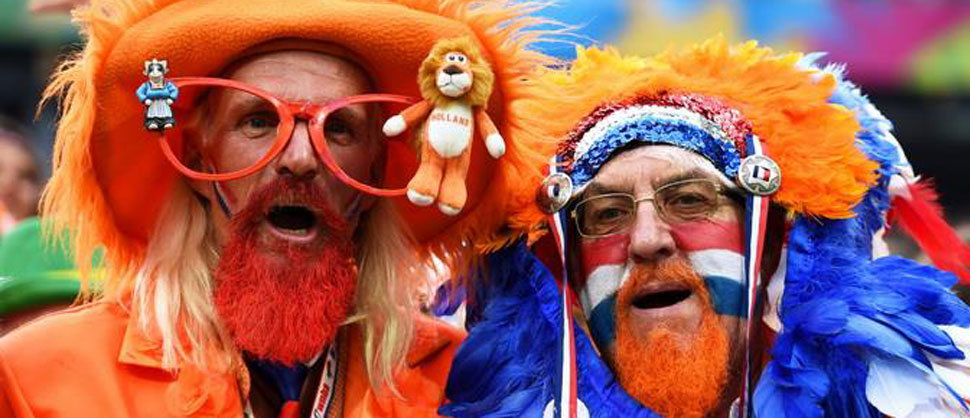

Отчет о финалах
Полуфиналы порадовали невероятной интригой и борьбой до самого финального свистка. Однако, даже в матчах за места с 5 по 10 не было ни единого проходного результата - борьба, борьба и ещё раз борьба.
Hrading h1
Heading H2
Уважаемые айтишники, участники турнира и его болельщики. В воскресенье, команда Х1 играла бронзовый матч с командой EPAM Systems. Игра была шикарной по накалу, с кучей опасных моментов, с борьбой на каждом уголке поля. Но, как это часто бывает, всё испортил "человек в черном". За Сергеем Ващуком и раньше наблюдалось подобное, но в этот раз он превзошел сам себя. Я не хочу говорить, о какой-то там связи Сергея судьи с тренером Эпама, который по совместительству работает одним из организаторов аматорского турнира в Харькове.
Я просто констатирую факт, что в этой игре уважаемый Сергей Ващук посадил нас на свисток. Апогеем его "судейства" стал вот этот момент в конце матча. Напомню события, которые произошли до этого момента. Счет был 3-3, у Х1 было 5 фолов( не хочу говорить, все ли 5 фолов были честны). Идет опасная атака у ЭПАМА, наши защитники грамотно блокируют нападающего соперника, мяч немного
Heading h3
- Уважаемые айтишники, участники турнира и его болельщики
- В воскресенье, команда Х1 играла бронзовый матч с командой EPAM Systems
- Игра была шикарной по накалу, с кучей опасных моментов, с борьбой на каждом уголке поля
Я просто констатирую факт, что в этой игре уважаемый Сергей Ващук посадил нас на свисток. Апогеем его "судейства" стал вот этот момент в конце матча. Напомню события, которые произошли до этого момента. Счет был 3-3, у Х1 было 5 фолов( не хочу говорить, все ли 5 фолов были честны). Идет опасная атака у ЭПАМА, наши защитники грамотно блокируют нападающего соперника, мяч немного повозился в борьбе и отскочил к нашему вратарю. Секунда молчания и свисток Ващука, оп...
Я просто констатирую факт, что в этой игре уважаемый Сергей Ващук посадил нас на свисток. Апогеем его "судейства" стал вот этот момент в конце матча. Напомню события, которые произошли до этого момента. Счет был 3-3, у Х1 было 5 фолов( не хочу говорить, все ли 5 фолов были честны). Идет опасная атака у ЭПАМА, наши защитники грамотно блокируют нападающего соперника, мяч немного повозился в борьбе и отскочил к нашему вратарю. Секунда молчания и свисток Ващука, оп...
Heading h4
Heading h5
Heading h6
- грамотно блокируют напад
- грамотно блокируют напад
- грамотно блокируют напад
Я просто констатирую факт, что в этой игре уважаемый Сергей Ващук посадил нас на свисток. Апогеем его "судейства" стал вот этот момент в конце матча. Напомню события, которые произошли до этого момента. Счет был 3-3, у Х1 было 5 фолов( не хочу говорить, все ли 5 фолов были честны). Идет опасная атака у ЭПАМА, наши защитники грамотно блокируют нападающего соперника, мяч немного повозился в борьбе и отскочил к нашему вратарю. Секунда молчания и свисток Ващука, оп...